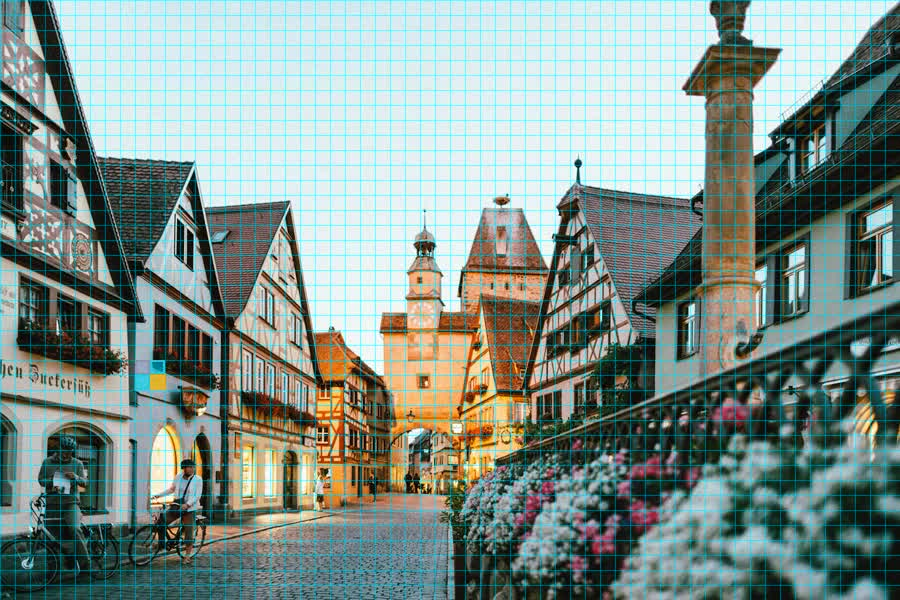

In one of the interviews, Nidžara Ahmetašević, a Bosnian journalist,
emphasized the importance of citizen journalism. She started her
career as a journalist during the siege of Sarajevo when she was
seventeen. She was hungry and in constant danger, while journalists
from big media stayed in safe hotels with plenty of whisky and meat.
Her stance is that we should be listening to local journalists and
local people.
I cannot judge that opinion. But I agree citizen journalism is
important and will become even more so. However, how do we trust it, if
anyone can generate whatever photo or video they want?
Sarajevo, 1996SSGT Louis Briscese, USAF / public domainAI-modified
Before the 2026 elections
Slovenia: videos offered as proof of corruption
Days before the 2026 election, secretly recorded clips of politicians
and other public figures, appearing to discuss influence, lobbying and
the misuse of state funds, appeared on anti-corruption2026.com.
Every usable origin trace had been erased: when and where they were
made, which device recorded them, who recorded or edited them, and
which software was used.
There would be little uncertainty if every published clip had to carry
capture provenance: time, place, device, and an unbroken link back to
the original recording, plus proofs of what was done to the video
after capture.
German BKA analysts examined 27 files. None were original camera
recordings. All had been processed: voices distorted, segments merged,
origin traces wiped.
National Assembly, LjubljanaMZaplotnik / Wikimedia Commons
Where the ecosystem is
Two pieces have to exist: signing at capture, and proofs of what
happened after.
Sign at capture
Some cameras are shipping with signing at capture. True hardware
signing (pixels sealed before any app can touch them) is rare,
and often unclear from the marketing.
What gets signed
A hash of the pixels, or a commitment the proof system can later
open against. That choice shapes how expensive proving becomes,
and what the camera has to compute on-device.
Prove what changed
Once a file leaves the camera, ordinary edits break the
signature. Zero-knowledge proofs close that gap without revealing
the original.
What does the camera sign, and what do you have to keep around to publish?
Eva
zk-Cinema
Camera signs
Hash of the pixels
Commitment to the video
You keep
The published video
The published video and a lossless master, ~2 GB per 2 min
Proof
~448 B
~0.7–1.8 MB
Viewer gets
Video + proof
Video + proof
Eva proves the compressed file the viewer actually receives. zk-Cinema
proves a lossless master, so publishing means hosting a second copy
that outweighs the published file by ~70×, and
trusting someone who eyeballed both.
Distribution
What has to travel with a video
Why Eva pays for it
The codec is inside the proof. That is the expensive part, and also
the reason nothing extra has to be stored or trusted.
Why zk-Cinema skips it
Proving compression is slow, so it proves the edit on lossless
video instead and moves the compression gap to a human.
How Eva works
Macroblock after macroblock, each hash chained to the last.
The frame is a grid of 16×16 macroblocks. Eva walks them in order:
hash this block together with the running state from the previous ones.
At the end of the original video that chain is h1;
after the edit, the same walk yields h2.
Originalone macroblock zoomed
Edited · redactsame block, now black
One macroblock
Pixels here are YUV, not RGB.
Y is luma (brightness).
U and
V are chroma (colour),
stored at half resolution in each direction (4:2:0). A 16×16 macroblock
holds 256 Y bytes plus 64 U and 64 V. That is what Eva hashes and edits.
Where we are in the frame
BeforeAfter redactY → 0
Y 16×16 · first 4 rows (real bytes from that macroblock)
202 194 189 197 193 190 187 153 56 21 18 23 23 12 26 24
186 209 200 193 199 194 183 168 83 24 18 20 16 24 17 15
204 201 194 200 202 192 184 173 110 22 19 15 20 36 26 26
96 162 195 196 196 183 182 204 146 43 28 16 25 26 27 25
U 8×8 · 121 120 119 120 … V 8×8 · 136 136 136 135 …
Redact (fill 0) → every Y in the macroblock becomes 0. The proof attests that only those bytes changed.
Prediction · intra
Independent blocks are simpler to prove. Prediction makes blocks depend.
Codecs do not store each block as raw pixels. They predict
X from neighbors
already decoded (everything left and above), then store only the
residual
(what the prediction got wrong). A good prediction means a small residual,
and that shrinks the file:
actual = prediction + residual.
Edit a neighbor, and X’s prediction (and residual) can change too.

L
A
X
Macroblock gridcyan = predictors · gold = current
Proving encode
Predictions shrink the video. Eva does not compute them in the proof.
Finding a prediction for every block is hard, and proving the prediction
would be worse. So the prover runs an ordinary encoder
outside the circuit
and keeps each block’s prediction and residual as a private
witness.
Inside the proof, Eva checks
prediction + residual = edited pixels.
Private to the prover
Verifiers see the proof and the public hashes, not the original pixels
or the encoder’s prediction and residual files.
Eva today
Eva proves encode. fightfake.ai ships edit-only for now.
The encode path uses prediction and residual witnesses inside the proof.
What ships on fightfake.ai
proves the edit on pixels only: no predictions, no encode in the SNARK.
Re-encode happens afterward, outside the proof.
Making Eva faster
Most of the clip never changes. Why prove all of it?
Original · stays privatePublishedredact only ~2.0s–4.5s
0:00 / 0:00
Here the edit is a moving black box on a short time range and a small
spatial region. Eva today still folds every macroblock in the clip.
The next step might be
touched-only:
prove the blocks the edit can reach, and leave the rest as a signed
copy from the camera.
Touched-only · commitment
Every block is a leaf. Skip is why the tree exists.
The camera signs a Merkle root over
all
macroblocks, including the future island. Island leaves are
opened into Nova
and proved. Skip leaves stay under the same root without a Nova step.
A running hash cannot skip: leave one block out and the signature breaks.
Touched-only · full re-encode
Edit is local. Re-encode is not.
After a redact, pixels outside the island are unchanged. Run a normal
encoder over the whole clip anyway, and it picks new predictions and
residuals almost everywhere. Then there is almost nothing left to copy
from the camera.
Touched-only · island-only encode
You cannot paste a separately encoded island into the camera stream.
Touched-only
is
keep camera bytes on skip and only redo the island. The merge can assemble
and even play. The picture still drifts if the island was encoded on its
own: those residuals were fitted to the wrong reconstruction.
Where the hard part sits
ZK proofs will get cheap. Capture hardware will not, by itself.
Proving is a research curve
Folding, lookups, better circuits, less of the clip to prove:
that stack moves every year. Imagine a slice of the blockchain
ZKP community pointed at provenance instead of rollups. Touched-only,
faster folds, and browser verify are solvable on a human timeline.
The binding still needs a sealed root
A fast proof only attests what was signed at capture. If phones
can mint “camera” signatures for arbitrary bytes, cheaper proving
just accelerates a weak story.
So the real problem next
Silicon that hashes on the pixel bus and signs only that digest, before
the OS can substitute bytes. The next slides are about why today’s
phone C2PA is not that, and what fightfake wants instead.
Capture · hardware
Phone “camera signing” is not a sealed sensor.
Eva (and C2PA) still need a trustworthy signature at capture. On Android,
that trust sits on Key Attestation / Play Integrity around a camera
app,
not on pixels sealed before software can touch them.
Attestation does not see exploit root
Locked bootloader, vendor AVB keys, “up to date” still look fine.
Google will provision keys to a compromised device. Pixel Camera had
Assurance Level 2, the strongest Android C2PA rating.
Keys stay “hardware-backed”
Root does not need to extract the private key. It only needs to call
the KeyStore as the camera app and sign arbitrary media.
Capture · fightfake hardware
That break is about app signing. The capture we want is different.
Buchanan’s attack fits Android camera apps: root asks StrongBox to sign
an arbitrary digest. fightfake’s sketch hashes on the pixel bus and lets
the secure element sign
only
those locked registers, never a digest from the OS.
What this answers
App + attestation “hardware-backed” signing. Pixel Assurance Level 2
can still mint “captured” C2PA for arbitrary bytes after root. A bus
hash with SE-only register signing is aimed at that failure.
What still remains
Fake feed before the hash tap. Attacks on the SE or FPGA itself.
Optical re-capture (photo of a screen). Manufacturer key compromise.
Implement it wrong (hash in OS RAM, or SE accepts OS digests) and
Buchanan applies again.